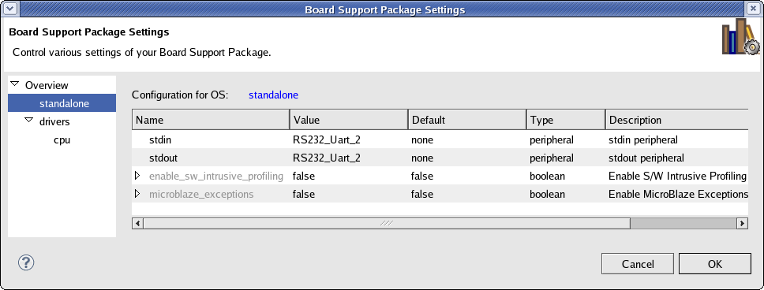
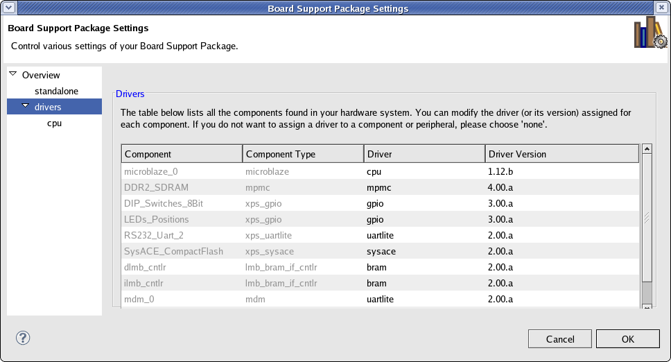
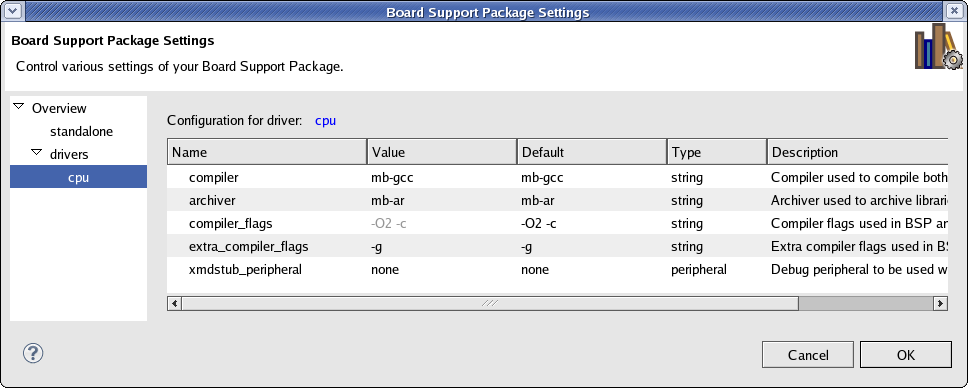

Board support packages (SDK)
Software repositories
To configure an existing board support package project used to develop applications within SDK, do the following:
The Board Support Package Settings dialog box consists of the following pages:
In the Overview page, you can configure basic settings for the OS Version and the Supported Libraries to be enabled in the platform.
Note: You cannot change the OS choice in this page, because the OS type is determined by the type you chose for the software platform when you created it.

In the Board Support Package settings page, you can configure parameters of the OS and its constituent libraries.

The Drivers page lists all the device drivers assigned for each peripheral in your system. You can select each peripheral and change its device driver assignment and its version. If you want to remove a driver for a peripheral, assign the driver to none.
Some device drivers export parameters that you can configure. If a driver in the driver list has parameters, it is listed in navigation pane on the left and you can configure them by clicking on the driver name.

The Driver Configuration page lists all of the configurable driver parameters. To change a parameter, click on the corresponding Value field and type the new setting.
When you finish with all the settings you want to make, click OK and SDK commits your changes.
If the Build Automatically option is selected in the Project menu, SDK automatically rebuilds your software platform with your new settings applied.
Note: The exact list of software components appearing in the Board Support Package Settings dialog box depends on the components available in the SDK install, as well as the list of components found in any software repositories that are set up in your workspace. For information about how software repositories work, refer to Software repositories.


Board support packages (SDK)
Software repositories

Building a board support package for SDK
Setting up software repositories
Creating a C or C++ project

Board Support Package (SDK) Settings dialog box
Copyright © 1995-2013 Xilinx, Inc. All rights reserved.